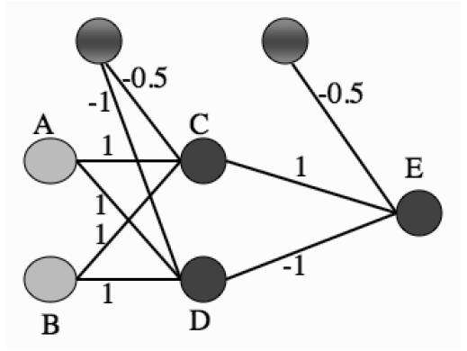
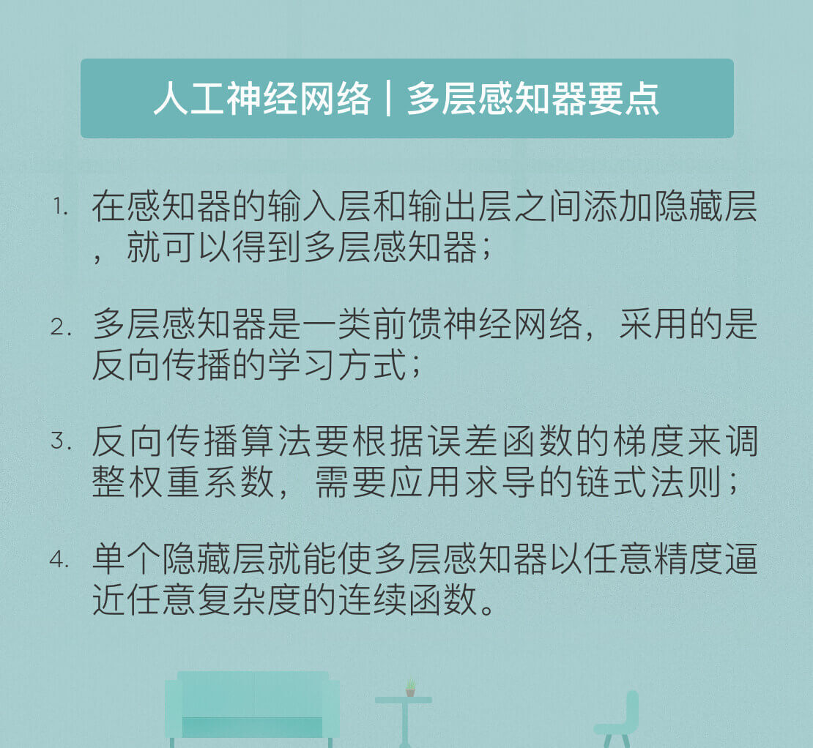

- 00 开篇词 人工智能：新时代的必修课.md.html
- 01 数学基础 九层之台，起于累土：线性代数.md.html
- 02 数学基础 月有阴晴圆缺，此事古难全：概率论.md.html
- 03 数学基础 窥一斑而知全豹：数理统计.md.html
- 04 数学基础 不畏浮云遮望眼：最优化方法.md.html
- 05 数学基础 万物皆数，信息亦然：信息论.md.html
- 06 数学基础 明日黄花迹难寻：形式逻辑.md.html
- 07 机器学习 数山有路，学海无涯：机器学习概论.md.html
- 08 机器学习 简约而不简单：线性回归.md.html
- 09 机器学习 大道至简：朴素贝叶斯方法.md.html
- 10 机器学习 衍化至繁：逻辑回归.md.html
- 11 机器学习 步步为营，有章可循：决策树.md.html
- 12 机器学习 穷则变，变则通：支持向量机.md.html
- 13 机器学习 三个臭皮匠，赛过诸葛亮：集成学习.md.html
- 14 机器学习 物以类聚，人以群分：聚类分析.md.html
- 15 机器学习 好钢用在刀刃上：降维学习.md.html
- 16 人工神经网络 道法自然，久藏玄冥：神经网络的生理学背景.md.html
- 17 人工神经网络 一个青年才俊的意外死亡：神经元与感知器.md.html
- 18 人工神经网络 左手信号，右手误差：多层感知器.md.html
- 19 人工神经网络 各人自扫门前雪：径向基函数神经网络.md.html
- 20 人工神经网络 看不见的手：自组织特征映射.md.html
- 21 人工神经网络 水无至清，人莫至察：模糊神经网络.md.html
- 22 深度学习 空山鸣响，静水流深：深度学习概述.md.html
- 23 深度学习 前方有路，未来可期：深度前馈网络.md.html
- 24 深度学习 小树不修不直溜：深度学习中的正则化.md.html
- 25 深度学习 玉不琢不成器：深度学习中的优化.md.html
- 26 深度学习 空竹里的秘密：自编码器.md.html
- 27 深度学习 困知勉行者勇：深度强化学习.md.html
- 28 深度学习框架下的神经网络 枯木逢春：深度信念网络.md.html
- 29 深度学习框架下的神经网络 见微知著：卷积神经网络.md.html
- 30 深度学习框架下的神经网络 昨日重现：循环神经网络.md.html
- 31 深度学习框架下的神经网络 左右互搏：生成式对抗网络.md.html
- 32 深度学习框架下的神经网络 三重门：长短期记忆网络.md.html
- 33 深度学习之外的人工智能 一图胜千言：概率图模型.md.html
- 34 深度学习之外的人工智能 乌合之众的逆袭：集群智能.md.html
- 35 深度学习之外的人工智能 授人以鱼不如授人以渔：迁移学习.md.html
- 36 深度学习之外的人工智能 滴水藏海：知识图谱.md.html
- 37 应用场景 你是我的眼：计算机视觉.md.html
- 38 应用场景 嘿, Siri：语音处理.md.html
- 39 应用场景 心有灵犀一点通：对话系统.md.html
- 40 应用场景 数字巴别塔：机器翻译.md.html
- 一键到达 人工神经网络复习课.md.html
- 一键到达 应用场景复习课.md.html
- 一键到达 数学基础复习课.md.html
- 一键到达 机器学习复习课.md.html
- 一键到达 深度学习之外的人工智能复习课.md.html
- 一键到达 深度学习复习课.md.html
- 一键到达 深度学习框架下的神经网络复习课.md.html
- 推荐阅读 我与人工智能的故事.md.html
- 新书 《裂变：秒懂人工智能的基础课》.md.html
- 直播回顾 机器学习必备的数学基础.md.html
- 第2季回归 这次我们来聊聊机器学习.md.html
- 结课 溯洄从之，道阻且长.md.html
- 课外谈 “人工智能基础课”之二三闲话.md.html
- （课外辅导）人工神经网络 拓展阅读参考书.md.html
- （课外辅导）数学基础 拓展阅读参考书.md.html
- （课外辅导）机器学习 拓展阅读参考书.md.html
- （课外辅导）深度学习 拓展阅读参考书.md.html
- 捐赠
18 人工神经网络 左手信号，右手误差：多层感知器
虽然异或问题成为感知器和早期神经网络的阿喀琉斯之踵，但它并非无解的问题。恰恰相反，解决它的思路相当简单，就是将单层感知器变成多层感知器。下图就是一个多层感知器的实例，这个包含单个隐藏层的神经网络能够完美地解决异或问题。
 （图片来自Machine Learning: An Algorithmic Perspective, 2nd Edition, Figure 4.2）
假定两个输入节点A和B的二进制输入分别为1和0，则根据图中的权重系数可以计算出神经元C的输入为0.5，而神经元D的输入为0。在由C和D构成的隐藏层中，由于C的输入大于0，因而符号函数使其输出为1；由于D的输入等于0，符号函数则使其输出为0。在输出节点的神经元E上，各路输入线性组合的结果为0.5，因而E的输出，也是神经网络整体的输出，为1，与两个输入的异或相等。在此基础上可以进一步证明，这个神经网络的运算规则就是异或操作的运算规则。
多层感知器（multilayer perceptron）包含一个或多个在输入节点和输出节点之间的隐藏层（hidden layer），除了输入节点外，每个节点都是使用非线性激活函数的神经元。而在不同层之间，多层感知器具有全连接性，即任意层中的每个神经元都与它前一层中的所有神经元或者节点相连接，连接的强度由网络中的权重系数决定。多层感知器是一类前馈人工神经网络（feedforward neural network）。网络中每一层神经元的输出都指向输出方向，也就是向前馈送到下一层，直到获得整个网络的输出为止。
多层感知器的训练包括以下步骤：首先确定给定输入和当前权重下的输出，再将输出和真实值相减得到误差函数，最后根据误差函数更新权重。在训练过程中，虽然信号的流向是输出方向，但计算出的误差函数和信号传播的方向相反，也就是向输入方向传播的，正因如此，这种学习方式得名反向传播（backpropagation）。反向传播算法通过求解误差函数关于每个权重系数的偏导数，以此使误差最小化来训练整个网络。
在反向传播算法中，首先要明确误差函数的形式。当多层感知器具有多个输出时，每个分类结果\(y_j\)与真实结果\(d_j\)之间都会存在误差。在单层感知器中，误差直接被定义为两者之间的差值。但在多个输出的情形下，如果第一个输出神经元的误差大于零，第二个输出神经元的误差小于零，这两部分误差就可能部分甚至完全抵消，造成分类结果准确无误的假象。
如何避免这个问题呢？
为了避免这个问题，在反向传播算法中，每个输出神经元的误差都被写成平方项的形式，整个神经网络的误差则是所有输出神经元的误差之和。如此一来，误差函数就以二次型的形式体现，也就避免了符号的影响。
明确定义了误差函数后，就要想方设法让它取得最小值。影响误差函数的因素无外乎三个：输入信号、传递函数和权重系数。输入信号是完全不依赖于神经网络的外部信号，无法更改；传递函数在网络设计过程中已经确定，同样无法更改；所以在算法执行的过程中，能够更新的就只有权重系数了。
既然提到了传递函数，就有必要对多层感知器中的传递函数加以说明。单层感知器中使用的符号函数有一个缺点：它是不连续的函数，因而不能在不连续点上求解微分。为了解决这个弊端，多层感知器采用对数几率函数作为传递函数。还记得对数几率函数在哪里出现过吗？没错，在机器学习中的逻辑回归算法当中。你可以回忆一下对数几率函数的表达式。
根据最优化理论，求解误差函数的最小值就要找到误差函数的梯度，再根据梯度调整权重系数，使误差函数最小化。对误差函数的求解从输出节点开始，通过神经网络逆向传播，直到回溯到输入节点。这背后的原理在于权重系数的变化对输出的影响方式并非直接修改，而是通过隐藏层逐渐扩散。这样环环相扣的作用方式体现在数学上就是求导的链式法则。
链式法则是个非常有用的数学工具，它的思想是求解从权重系数到误差函数这个链条上每一环的作用，再将每一环的作用相乘，得到的就是链条整体的效果。利用链式法则求出梯度后，再以目标的负梯度方向对权重系数进行调整，以逐渐逼近误差函数的最小值。
将平方误差函数、对数几率函数、求导链式法则三大法宝放在一起，就可以召唤出反向传播算法的流程：
- 初始化网络中所有权重系数和阈值；
- 在前向计算中，将训练样本送入输入节点，在输出节点得到训练结果，再以平方误差形式计算训练输出和真实输出之间的误差函数\(E = \\dfrac{1}{2} \\sum\\limits_j (d_j - y_j ) ^ 2\)；
- 在反向计算中，计算神经网络的局域梯度\(\\dfrac{\\partial {E}}{\\partial {w_{hi}}}\)，并根据局域梯度和学习率\(\\eta\)从输出层到隐藏层对权重系数进行逐层更新\(\\Delta {w_{hi}} = - \\eta \\dfrac{\\partial {E}}{\\partial {w_{hi}}}\)；
- 利用新样本训练多层感知器，迭代进行前向计算和反向计算，直到满足停止准则。
抛开冗杂的数学符号和运算不论，反向传播算法的原理其实并没有那么复杂。如果你能在头脑中勾勒出包含单个隐藏层的多层感知器结构，那不妨直观想象一下当某个输入上出现细微的扰动会导致什么结果？
由于层与层之间的连接方式是全连接，因而单个输入的微小变化会传递到所有的隐藏神经元，每个隐藏神经元都会感受到来自输入的波动。由于隐藏神经元的输入是输入信号的线性组合，因而输入端的扰动体现在隐藏神经元上就经过了一重权重系数的放大。经过权重系数放大后的扰动又被送入非线性的传递函数里，传递函数输入端的扰动导致的输出端的改变就要再乘以一个传递函数的导数作为放大因子。
上面的这个过程发生在单个的隐藏神经元上，而在隐藏层中每个神经元上发生的都是同样的故事，所以整个网络的输出变化就等于所有隐藏神经元上由“权重系数 + 传递函数”计算出的输出变化的总和。不难看出，误差函数对单个输入的偏导数就是“权重系数 + 传递函数”的联合作用。
看到这儿你可能会问，说的这些都是输入信号的扰动对输出结果的影响方式，这和反向传播有什么关系呢？当然有啦！当输入信号不变时，两个导数之间的关系就完全由权重系数的变化决定。将上面过程中输入信号和权重系数的角色做个调换，就可以得出误差函数对权重系数的偏导数就是“输入信号 + 传递函数”的联合作用。而这，恰恰就是链式法则的原理。
多层感知器的核心结构就是隐藏层，之所以被称为隐藏层是因为这些神经元并不属于网络的输入或输出。在多层神经网络中，隐藏神经元的作用在于特征检测。随着学习过程的不断进行，隐藏神经元将训练数据变换到新的特征空间之上，并逐渐识别出训练数据的突出特征。
在解决实际问题时，多层感知器的设计要考虑一些工程因素。假设单隐层的多层感知器有\(L\)个输入节点、\(M\)个隐藏节点和\(N\)个输出节点，那这个网络的权重系数总数就是\((L + 1) \\times M + (M + 1) \\times N\)。这些权重的取值都需要由反向传播算法确定，而反向传播算法又由训练数据的错误来驱动。因而用于训练的数据越多，多层感知器的学习效果也就越好。一个经验法则是训练样本数目应该是权重系数数目的10倍，这显然对计算能力提出了较高的要求。从这个角度看，明斯基对感知器的批评是站得住脚的。
抛开训练数据量不论，隐藏层和隐藏神经元的数目也是网络设计中需要考虑的问题。在数学上可以证明，单个隐藏层就能够实现凸区域，双隐藏层更是可以实现任意形状的凸区域，也就能够解决任何复杂的分类问题。
在隐藏层数目不变的前提下，区域的复杂程度还能够随着隐藏神经元数目的增加而提升。在数学上同样可以证明，只要隐藏神经元的数目足够多，一个隐藏层就能使多层感知器以任意精度逼近任意复杂度的连续函数。通常情况下，多层感知器不会选择两个以上的隐藏层，因为层数越多，要追踪哪些权重正在被更新就越困难，又不会带来性能的提升。
多层感知器的训练要需要多次遍历整个数据集，因而迭代次数就成为另一个重要的问题。预先设定迭代次数无法保证训练效果，预先设定误差阈值则可能导致算法无法终止。因而常用的办法是：一旦误差函数停止减小，就终止学习算法。
同其他机器学习方法一样，多层感知器也面临过拟合的风险。模型的泛化能力可以通过验证集来监督，也就能够在一定程度上避免过拟合的发生。当训练集的误差下降但验证集的误差上升时让训练立即停止，这就是所谓“早停”的过拟合抑制策略。当然，正则化方法也可以应用在多层感知器的训练中。
今天我和你分享了多层感知器和反向传播的基本原理，关于反向传播具体的数学细节你可以参考相关文献，其要点如下：
- 在感知器的输入层和输出层之间添加隐藏层，就可以得到多层感知器；
- 多层感知器是一类前馈神经网络，采用的是反向传播的学习方式；
- 反向传播算法要根据误差函数的梯度来调整权重系数，需要应用求导的链式法则；
- 单个隐藏层就能使多层感知器以任意精度逼近任意复杂度的连续函数。
反向传播算法是在1986年由乔弗雷·辛顿提出的，可今天，作为反向传播之父的辛顿却要大义灭亲。辛顿的观点是没有目标函数就无法进行反向传播，而如果数据没有标签自然就没有目标函数了。因此，要实现无监督学习就必须告别反向传播算法。那么应该如何看待辛顿的观点呢？
欢迎发表你的观点。欢迎发表你的观点。

© 2019 - 2023 Liangliang Lee. Powered by gin and hexo-theme-book.